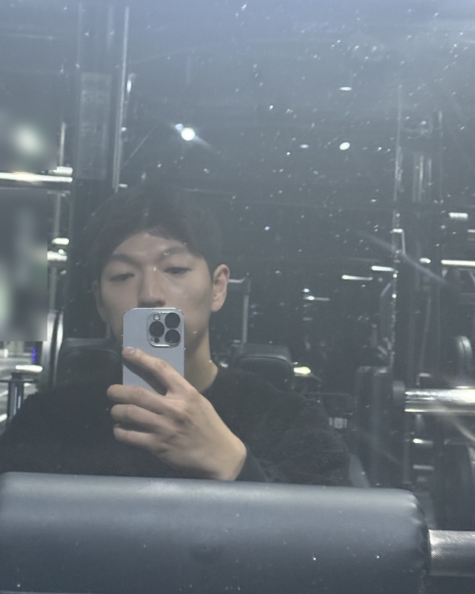
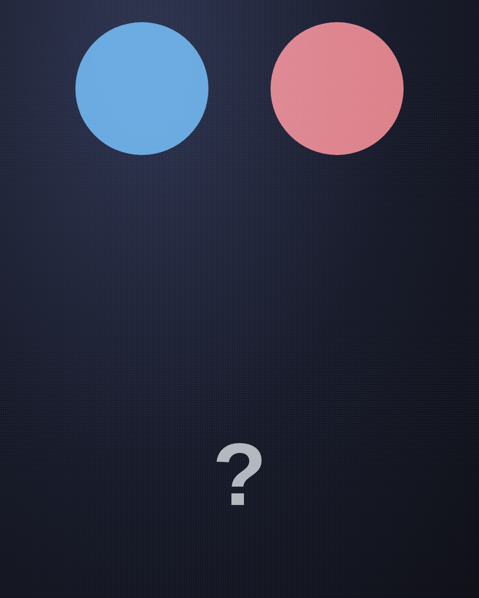
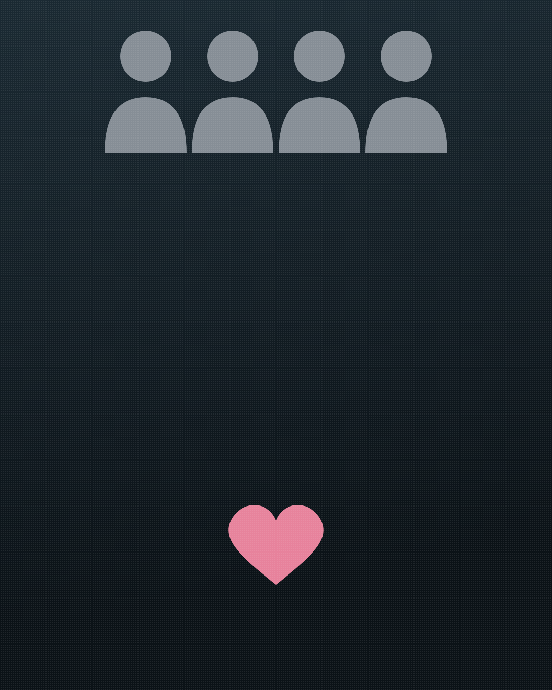
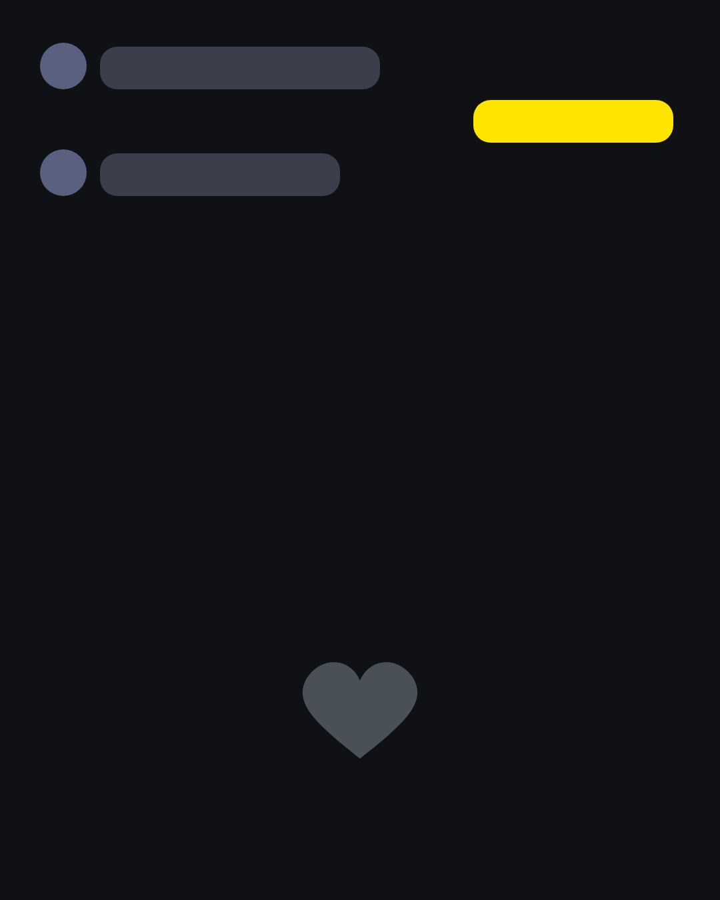
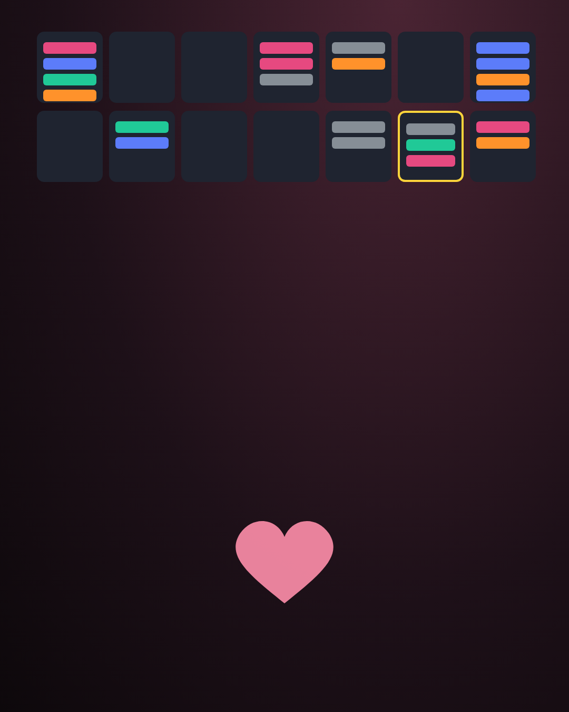
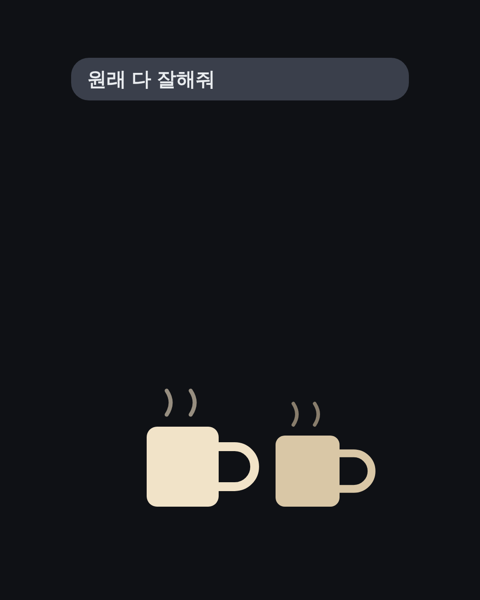
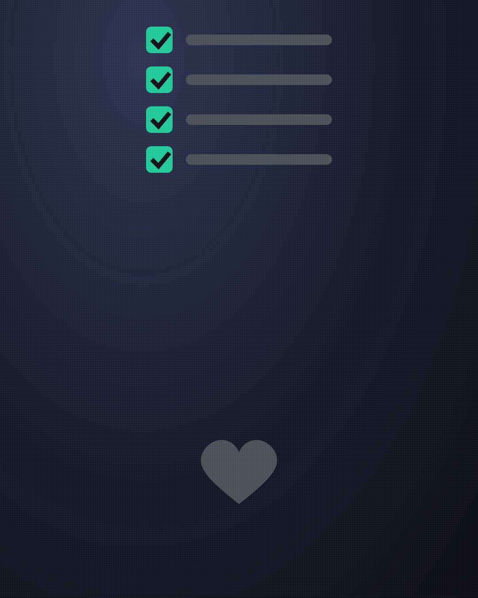
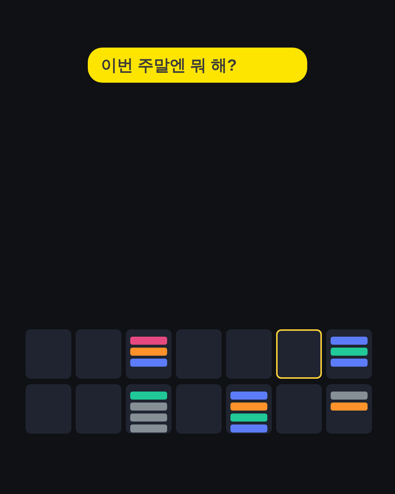

잘해주는 남자 vs 좋아하는 남자,
딱 한 끗 차이
(헷갈리는 그 사람, 어느 쪽이에요?)
1/14
@mszexc
넘겨보세요 →

친절한데,
좋아하는 건지 모르겠는 남자.
2/14
@mszexc
남자들끼리 하는 말 #59
잘해주는 것과 좋아하는 것은
비슷해 보여도 달라요.
3/14
@mszexc
남자들끼리 하는 말 #59

차이 ①
잘해주는 남자는 모두에게 친절해요.
(좋아하는 남자는 당신에게만 서툴러요.)
4/14
@mszexc
남자들끼리 하는 말 #59

차이 ②
잘해주는 남자는 부탁을 들어줘요.
(좋아하는 남자는 부탁하기 전에 해요.)
5/14
@mszexc
남자들끼리 하는 말 #59

차이 ③
잘해주는 남자는 대화를 잘 받아줘요.
(좋아하는 남자는 대화를 먼저 걸어요.)
6/14
@mszexc
남자들끼리 하는 말 #59

차이 ④
잘해주는 남자는 지금만 챙겨요.
(좋아하는 남자는 다음 약속을 잡아요.)
7/14
@mszexc
남자들끼리 하는 말 #59

남자들끼리는 이렇게 말해요.
"걔 원래 다 잘해줘. 너한테만 그런 거 아냐."
(친구들은 그 남자가 누구한테나 친절한 걸 알아요.)
8/14
@mszexc
남자들끼리 하는 말 #59
그리고 결정적인 차이.
좋아하는 남자는 질투해요.
(티를 안 내려고 해도, 말투에서 나와요.)
9/14
@mszexc
남자들끼리 하는 말 #59

반대로
모든 걸 다 맞춰주기만 한다면.
(좋아해서가 아니라, 갈등이 싫은 것일 수 있어요.)
10/14
@mszexc
남자들끼리 하는 말 #59

확인하는 법 하나.
그 남자가 다른 사람한테는 어떤지 보세요.
(모두에게 똑같으면, 성격이에요.)
11/14
@mszexc
남자들끼리 하는 말 #59

그리고 이렇게 물어보세요.
"이번 주말엔 뭐 해?"
(좋아하는 남자는 그 질문을 약속으로 바꿔요.)
12/14
@mszexc
남자들끼리 하는 말 #59
친절은 누구나 받을 수 있지만,
서툰 건 당신만 받을 수 있어요.
13/14
@mszexc
남자들끼리 하는 말 #59
이것만 기억하세요.
잘해주는 건 성격이고, 서툰 건 마음이에요.
남자가 하는 말의 뜻은 전자책 1·2권에 · 프로필 링크에서 무료로 받아보세요
14/14
@mszexc
남자들끼리 하는 말 #59